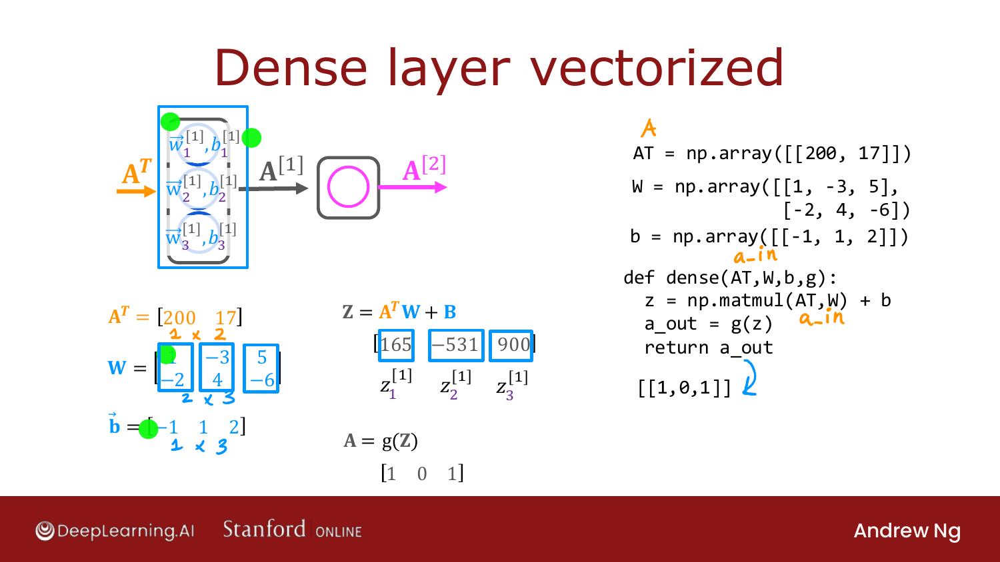
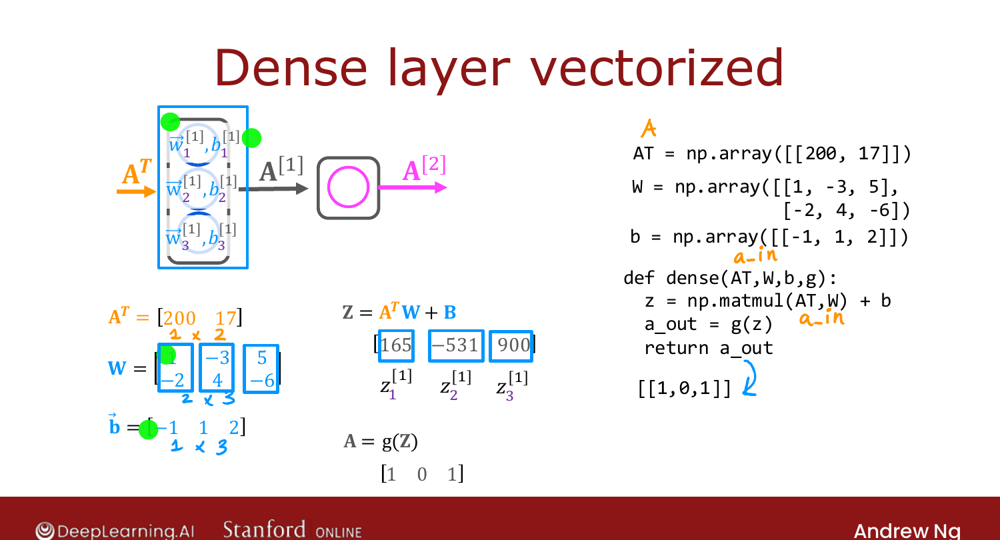

Matrix Multiplication Code¶
Course 2 · Week 1 · AI-generated study aid — not authoritative; trust the lecture & cited sources.
Putting it together: the vectorized implementation of a neural-network layer, and why
matmul makes forward prop both short and fast. [00:01]
Transpose and matmul in NumPy¶
Given a matrix A, its transpose is A.T. To compute \(Z = A^T W\):
AT = A.T # or build it directly
Z = np.matmul(AT, W) # matrix multiply
(You may also see AT @ W — the @ operator is the same as matmul; this course uses
np.matmul for clarity.) [01:43]
Vectorized forward prop through a dense layer¶
AT = np.array([[200, 17]]) # 1×2 input (coffee: 200°C, 17 min)
W = np.array([[1, -3, 5],
[-2, 4, -6]]) # weights stacked in columns
b = np.array([[-1, 1, 2]]) # 1×3
def dense(AT, W, b, g):
z = np.matmul(AT, W) + b # -> [165, -531, 900]
a_out = g(z) # sigmoid element-wise -> [1, 0, 1]
return a_out

Official C2 slide — the vectorized dense layer (DeepLearning.AI / Stanford).Here \(Z = A^T W + B\) gives \([165, -531, 900]\), and the sigmoid maps those to
\(\approx[1, 0, 1]\) (since \(\sigma(165)\approx1\), \(\sigma(-531)\approx0\), \(\sigma(900)\approx1\)).
[03:57]

Official C2 slide — vectorized dense layer (DeepLearning.AI / Stanford).A note on TensorFlow's convention¶
TensorFlow lays out individual examples in rows of the matrix X (rather than in
X^T), so library code calls the input A_in and works with X directly — but it's the
same computation. The upshot: a few lines of code implement forward prop, and modern
hardware runs matmul extremely efficiently. [05:35]
That wraps Week 1 — you now know neural-network inference (forward propagation).
Next week: how to train a neural network. [06:22]
Try it in the browser¶
Try it — implement a vectorized dense layer — edit the code, then hit Validate for instant ✓/✗ (runs real Python via Pyodide, no setup):
# Tests(case insensitive)(Ctrl+I)
(Alt+: / Ctrl to reverse the columns)
(Esc)